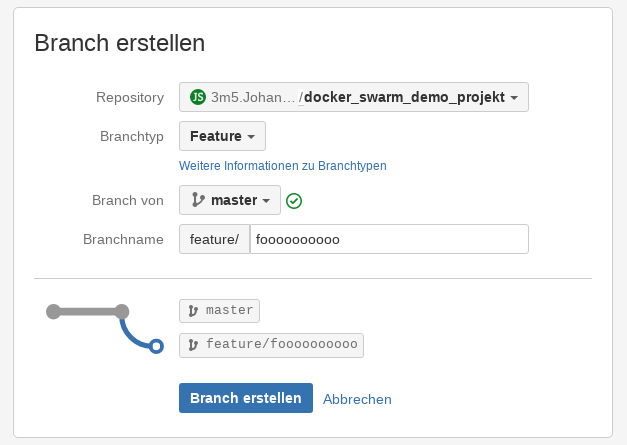

+

Feature Branch Deployments CI/CD
Wie bin ich dazu gekommen?
Testing sollte
- Entwickler nicht blockieren
- Am aktuellen Workflow nichts verändern
- Geschwindigkeit & Skalierung?
Feature Branch Deployments mit Docker Swarm
- Swarm Mode

- Im Prinzip gleiches Toolset wie wir bereits einsetzen
- Erlaubt die gemeinsame Nutzung von mehreren Docker Hosts (Servern)
- Worker und Manager Nodes
- Die Manager kümmern sich um den Swarm
- Die Worker führen unsere Container aus
Demo
- Jeder Branch der einem Muster entspricht wird gebaut, kennen wir ja schon
- Beispiel Branchname = feature/123

- Wir können alle unsere Tests dort durchführen
- Alle Branches können gleichzeitig laufen
- Lauffähige clones aller System Branches, ohne Setup Aufwand - automatisch
- Neue Möglichkeiten für QA (intern & extern)
- Ärger mit dem lokalen Docker? Änderungen einfach pushen
- Bei der Code-Review
- Mit welchem Branch wurde ein Fehler eingeführt? Auch für Nichtentwickler vergleichbar
- Entwickler A und B blockieren sich nicht auf Dev
- Weiterer Schritt in Richtung CD
Probleme?
- Kosten
- Große Daten (DB, Bilder)
- Je nach Bedingung wird jeder Commit deployed - skaliert der Jenkins mit?
- Zeitaufwand, Pflege ist notwendig
Was brauchen wir noch?
- Workflow mit Bitbucket, PR deployments?
- Entwicklung von einem einheitlichen Konzept
- Einfaches Setup für jedes Projekt
- Getrennte CI Systeme für Feature/Dev Deployments und Prod?
- Oder über Prio
Noch ein paar learnings
- Ob Jenkins, Gitlab-CI oder Drone - es war ziemlich ähnlich
- Wenn man viel mit Docker arbeitet, spart einem Linux als Docker-Host viel Zeit
- Once the cache is invalidated, all subsequent Dockerfile commands generate new images and the cache is not used.